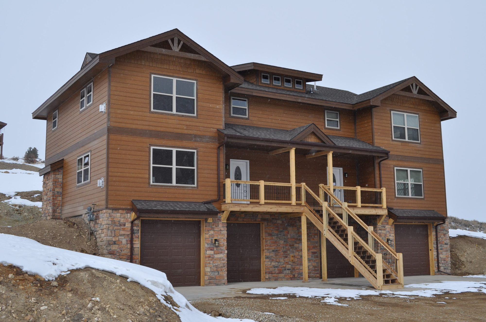

How Factory-Built Modular Housing Reduces the Cost of Affordable Housing Construction

The housing landscape in Colorado faces pressure from several angles: The state is experiencing continued population growth, housing prices remain historically high, and fewer homes are available in the market. These complications have created a perfect storm that calls for an innovative solution, and to keep up with demand, the Colorado Affordable Housing Transformational Task force estimates that 325,000 housing units must be built before 2026. Traditional building methods, such as stick-built construction, often pose challenges, ranging from long construction timelines to quality control issues. Overcoming these challenges while addressing the persistent problems in Colorado’s housing market is as important as ever. Here at Vederra Modular, we are pursuing a viable solution for affordable housing construction with factory-built modular homes.
Embracing factory-built modular housing not only provides shelter but also fosters communities, strengthens economies, and enriches lives.